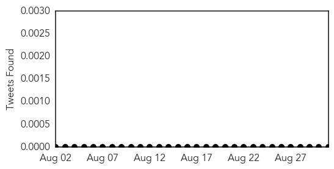
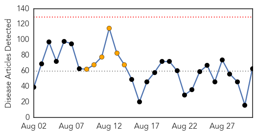
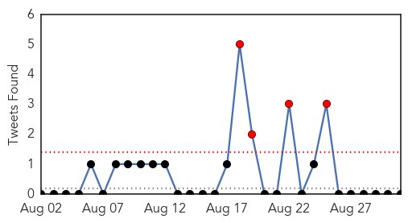

Yellow Fever
30-Day Web Trend
3 alerts, 0 warnings
30-Day Twitter Trend
0 alerts, 0 warnings

Article Locations

Article Confidences

Top Articles:
-
No articles found for Aug 31, 2015
Top Tweets:
-
No tweets found for Aug 31, 2015
Unknown
30-Day Web Trend
0 alerts, 6 warnings

30-Day Twitter Trend
4 alerts, 0 warnings

Article Locations
Article Confidences
Top Articles:
- 0.987
- Minnesota officials urge flu shots knowing there'll be skeptics
- 0.987
- San Quentin update: Six Legionnaires’ cases confirmed, dozens under observation
- 0.983
- Mers advice for Haj pilgrims
- 0.975
- Number of deaths from Legionnaires' disease at Illinois Veterans Home rises to four
- 0.975
- More San Quentin inmates diagnosed with Legionnaires’ disease
- 0.969
- CHCC notes increase in flu-like illnesses
- 0.947
- Several San Quentin prison inmates have tested positive for
- 0.940
- Several San Quentin prison inmates have tested positive for
- 0.923
- Several San Quentin prison inmates have tested positive for Legionnaires' disease
- 0.917
- Chicago Tribune
- 0.917
- Chicago Tribune
- 0.917
- Chicago Tribune
- 0.917
- Chicago Tribune
- 0.917
- Chicago Tribune
- 0.917
- Chicago Tribune
- 0.917
- Chicago Tribune
- 0.917
- Chicago Tribune
- 0.917
- Chicago Tribune
- 0.901
- Lyme Disease Is On The Rise In Canada, But Scientists Warn Against False-Positive Test Results
- 0.842
- Pro-Con: Should fluoride be added to drinking water?
- 0.841
- Florida Seawater Bacteria Cases, Deaths Rise
- 0.817
- Town official concerned over initial state response to hot tub infections
- 0.805
- Texas teen boy with brain-eating amoeba dies
- 0.795
- Legionnaires' cases increase at Quincy veterans home
- 0.754
- West Chester University says buildings safe from legionella bacteria
- 0.749
- Doctors warn of false positives in U.S. testing for Lyme disease
- 0.749
- Doctors warn of false positives in U.S. testing for Lyme disease
- 0.735
- Lyme disease diagnosis in 4-year-old Brigus girl could be 1st in N.L.
- 0.732
- South Africa risks spreading totally drug-resistant TB: study
- 0.722
- 6 San Quentin inmates confirmed suffering from Legionnaires'
- 0.720
- A breakthrough: experts say virus is the cause of the Bellinger turtles' death
- 0.719
- Cyclospora Sickens 92 in Canada
- 0.681
- HIV outbreak continues to spread
- 0.681
- EagleCountryOnline.com Department Of Health Investigating Additional HIV Cases In SEI
- 0.678
- In Peru, progress against TB
- 0.678
- With health in a shambles, hospitals become part of problem
- 0.674
- New, non-pharmaceutical treatment for panic disorder now offered at Allegheny Health Network through Highmark Health's VITAL Innovation Program
- 0.663
- Heavy cannabis users suffer from severe nausea and pain
- 0.659
- Six Inmates Test Positive For Legionnaires’ Disease
- 0.658
- Migrant trains reach Germany amid EU asylum crisis
- 0.656
- Texas Teen Passes Away Due to Rare Brain-Eating Amoeba
- 0.651
- Lyme disease diagnosis in 4-year-old Brigus girl could be 1st in N.L.
- 0.634
- DCH has average ranking in study
- 0.616
- Progress being made in Pacific health « LiveNews.co.nz
- 0.615
- Fight against swine fever has already required 2.78 mln euros in Estonia :: The Baltic Course
- 0.613
- United Nations provides assistance to Dominica
- 0.608
- Parrish files lawsuit against Health First
- 0.604
- Texas teen dies of rare brain-eating amoeba infection
- 0.583
- Humanitarian : New mission of the hospital ship USNS Comfort in Haiti
- 0.581
- New Type of Prion May Cause, Transmit Neurodegeneration
Showing top 50 articles...
Top Tweets:
- 0.991
- Walmart es un virus económico. Negativamente.
- 0.693
- RT: Lo bueno de Twitter, es tener en claro, que el resto de la gente no tiene porqué entenderte.
- 0.520
- RT: Una foca se deja acariciar la barriga por el submarinista Gary Grayson, en las islas Sorlingas. Foto de Nigel Wade htt…